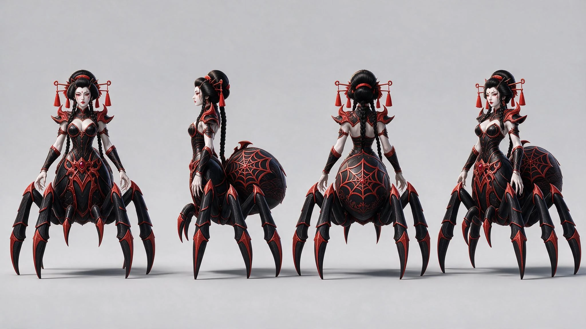
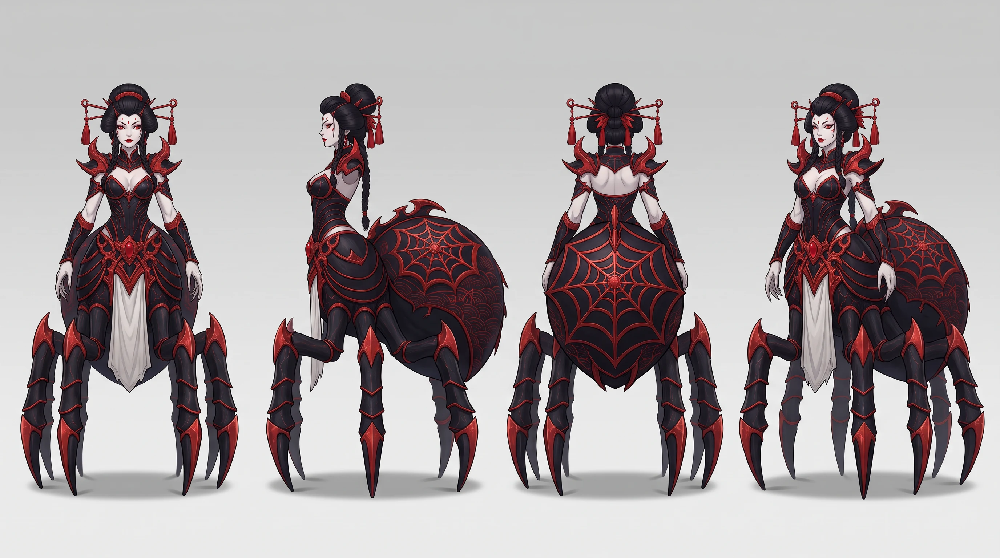

Mr. Mak Workspace / example
Arachne · 10 / Motion Tests
Eight historical Seedance 2.0 studies: four idle and four walk ideas, plus two turnaround sheets. These are visual references, not exported animation clips.
A production example with historical model labels. Click any image to inspect and download it. Later rounds supersede earlier studies.
Idle — what does the upper body do while she stands?
Regal stillness · concept art
Download clipArms down, hands folded at the waist, slow breathing, one small head turn.
Prompts
The spider queen stands in place in a calm regal idle. Upper body upright and still, arms lowered, hands gently folded in front of the waist. She breathes slowly, shoulders rise slightly, her head makes one small graceful turn. The big abdomen bobs very subtly, spider legs shift weight in tiny steps without walking. Locked static camera, no camera movement, no zoom, no cuts. The character stays fully in frame on the plain studio background. Smooth natural motion, consistent character, all six spider legs stay attached and coordinated.
Weaver hands · concept art
Download clipHands at chest height playing with an invisible silk thread, head tilted.
Prompts
The spider queen stands in place in an idle animation. Her hands rise to chest height and her long fingers slowly play with an invisible silk thread between them, elegant and hypnotic. Head tilts slightly as she watches her fingers. Torso sways gently, abdomen pulses softly, legs stay planted with micro-adjustments. Locked static camera, no camera movement, no zoom, no cuts. The character stays fully in frame on the plain studio background. Smooth natural motion, consistent character, all six spider legs stay attached and coordinated.
Menacing poise · concept art
Download clipOne hand raised inspecting the claws, slow sway, front legs tapping.
Prompts
The spider queen stands in place in a menacing idle. She raises one hand and slowly inspects her long claw-like fingers, then lowers it. Slow confident sway of the torso, chin high, a faint smile. Two front spider legs tap the ground lightly one after another, abdomen rises and falls with breathing. Locked static camera, no camera movement, no zoom, no cuts. The character stays fully in frame on the plain studio background. Smooth natural motion, consistent character, all six spider legs stay attached and coordinated.
3D model breathing · 3D screenshot
Download clipSubtle breathing idle on the actual model, side view.
Prompts
The 3D model of the spider queen breathes in a subtle idle animation, side view. Shoulders and chest rise gently, head turns a little toward the camera and back, fingers flex slightly. The abdomen bobs softly, legs make tiny weight shifts without stepping. Locked static camera, no camera movement, no zoom, no cuts. The character stays fully in frame on the plain studio background. Smooth natural motion, consistent character, all six spider legs stay attached and coordinated.
Walk — what does the upper body do while she moves?
Natural sway · concept art
Download clipUpright torso with soft counter-sway, arms swinging gently.
Prompts
The spider queen walks forward at a calm steady pace. Her six spider legs move in a coordinated alternating gait, body staying level. Upper body upright with a natural soft counter-sway to the steps, arms swinging gently at her sides. Locked static camera, no camera movement, no zoom, no cuts. The character stays fully in frame on the plain studio background. Smooth natural motion, consistent character, all six spider legs stay attached and coordinated.
Regal glide · concept art
Download clipUpper body almost still, hands folded, all motion in the legs.
Prompts
The spider queen walks forward like royalty gliding. All the motion is in the six spider legs stepping in an alternating gait; her upper body stays almost perfectly still and vertical, hands folded in front of the waist, chin high - a smooth regal glide. Locked static camera, no camera movement, no zoom, no cuts. The character stays fully in frame on the plain studio background. Smooth natural motion, consistent character, all six spider legs stay attached and coordinated.
Dancer arms · concept art
Download clipArms slightly raised geisha-style, loose wrists, torso counter-rotation.
Prompts
The spider queen walks forward with a dancer's grace. Six spider legs step in an alternating gait while her arms are slightly raised to the sides like a geisha dance pose, wrists loose, hands making small elegant movements, torso gently counter-rotating with each step. Locked static camera, no camera movement, no zoom, no cuts. The character stays fully in frame on the plain studio background. Smooth natural motion, consistent character, all six spider legs stay attached and coordinated.
3D model walk cycle · 3D screenshot
Download clipSide-view gait read on the actual model, natural arm swing.
Prompts
The 3D model of the spider queen walks forward in clean side view, a readable walk cycle: six spider legs stepping in an alternating gait, body level, natural gentle arm swing and slight torso sway. Locked static camera, no camera movement, no zoom, no cuts. The character stays fully in frame on the plain studio background. Smooth natural motion, consistent character, all six spider legs stay attached and coordinated.
Turnaround reference sheet — the character from all angles
Seedream v5 Pro edit

Nano Banana Pro edit (retry with a no-human-legs clause)
